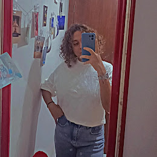

Quem sou eu?
Olá! Meu nome é Vanessa Barbosa dos Santos, sou de Ibirité-MG. Tenho formação em Técnico em Sistemas de Energia Renovável pelo Instituto Federal de Minas Gerais, e atualmente estou cursando Engenharia de Controle e Automação na mesma instituição.
Além dos meus estudos e experiências na área de engenharia, sou proprietária de uma loja de personalizados inspirados nas obras de Van Gogh. Na minha loja, crio itens únicos e artesanais que capturam a essência das pinturas de Van Gogh, oferecendo desde quadros e canecas até roupas e acessórios personalizados. Cada peça é feita com muita dedicação e busca transmitir a beleza e a emoção presentes nas obras do famoso pintor.
Sou apaixonada por tecnologia e inovação, e estou sempre buscando novos desafios e oportunidades para crescer na minha carreira. Nos meus tempos livres, gosto de ler, viajar e explorar novas culturas.
